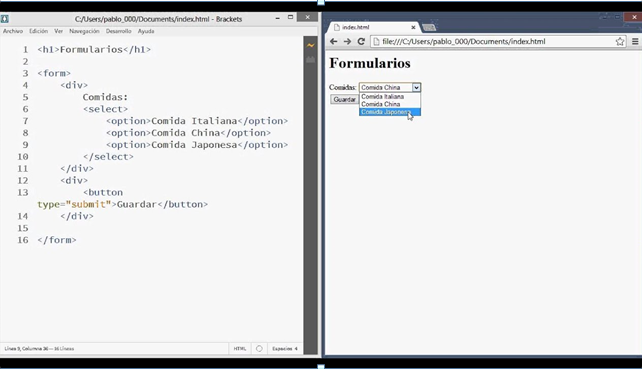
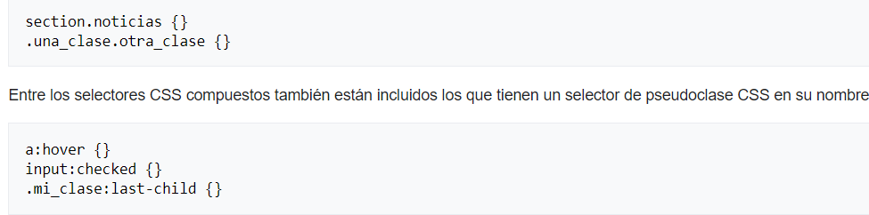
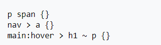
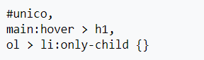
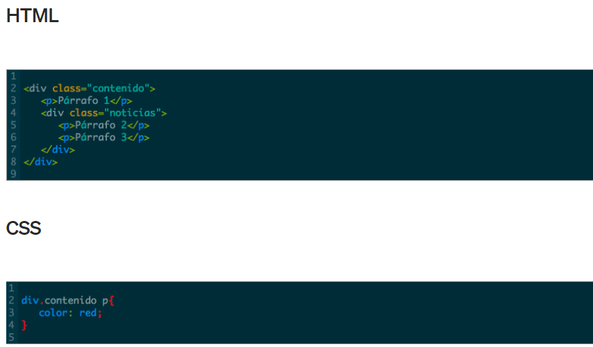
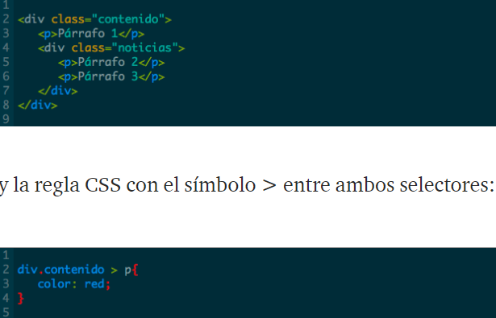
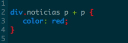
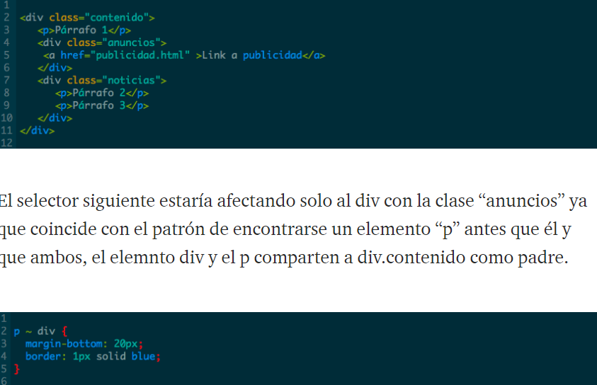

CSS3 ESTILOS INTERNOS Y EXTERNOS SELECTORES CSS
|
.png)
|
CONCEPTOS
SELECTORES CSS3
¿QUE SON?
El selector CSS (Cascading Style Sheet) es el nexo de unión entre la hoja de estilos y los documentos a los que se aplique dicha hoja.
Existen 4 tipos de selectores CCS
UN SELECTOR CCS SIMPLE
- Un selector simple es aquel que está formado solo por una única cadena textual, sin ningún combinador. Son selectores simples el selector universal *, el selector por tipo de elemento del DOM div | p | article..., el selector de ID # y de clase ., el de atributo, el de pseudoclase : y el de pseudoelemento :: (notación actual).
-Los combinadores son signos intercalados entre selectores simples para acotar o hacer más preciso el alcance del selector. Estos combinadores son el espacio en blanco, los signos + | ~ | >

SELECTOR CSS COMPUESTO
-es una cadena de selectores simples sin combinadores (el espacio en blanco también queda excluido porque es un combinador):

SELECTOR CSS CONPLEJO
-El «Selector complejo» es una secuencia o cadena de selectores separados por «combinadores».

LISTA DE SELECTORES CSS
- Una «lista de selectores» la conforman dos o más selectores de cualquier tipo separados por una coma ,

COMBINADORES DE SELECTORES
SELECTOR DECENDIENTE
Este selector afecta a todos los elementos que sean descendientes de otro elemento especificado, sin importar el nivel de profundidad al que se encuentren. Por ejemplo la siguiente regla afectaría a todos los elementos p> dentro de el elemento div> con la clase “contenido” y se indica poniendo un espacio entre un selector y el otro:

SELECTOR DE HIJO DIRECTO
Este selector actúa sobre todos aquellos elementos que sean hijos de otro elemento especificado, pero que se encuentren en el primer nivel, es decir, si están dentro de otro elemento hijo de ese mismo padre, no serán tomados en cuenta.

SELECTOR DE ELEMENTO ADYACENTE
Este selector afecta a los elementos que, teniendo el mismo elemento como padre, estén inmediatamente seguidos uno de otro, esta relación se representa con el símbolo + entre los selectores.

SELECTOR BASADO EN ELEMENTO PRESEDENTE CON EL MISMO PADRE
Este selector actúa sobre aquellos elementos que se encuentren precedidos por un elemento específico y que tengan como padre al mismo elemento, y se representa con el símbolo ~ entre los dos selectores.

fuentes blibliograficas usadas
- https://medium.com/sngular-devs/combinadores-en-css-bf117a8c91f5
- https://www.w3.org/Style/Examples/011/firstcss.es.html
- https://developer.mozilla.org/es/docs/Learn/Getting_started_with_the_web/CSS_basics